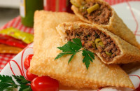

Pastel
Ingredientes
- 1 kg de farinha de trigo
- 1/2 xícara (chá) de óleo
- 1 colher (sopa) sal
- 1 ovo
- 1/2 dose de pinga
- 1 colher (chá) vinagre
- 250 ml de água
Modo de preparo
- Misture os ingredientes em uma tigela e amasse com as mãos.
- Sove bem a massa sobre uma superfície lisa enfarinhada.
- Utilize um rolo para esticar a massa e deixá-la na espessura desejada.
- Corte a massa no tamanho que quiser fazer os pastéis.
- Recheie de acordo com a sua preferência.
- Frite em óleo bem quente.